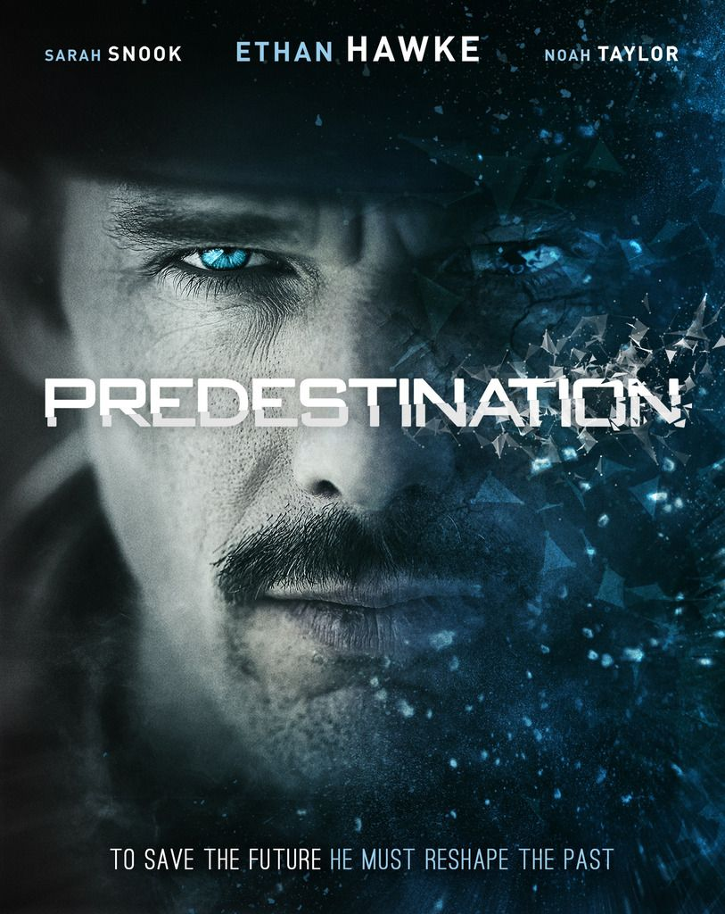

🍿 La cloroteca |
⤶ Volver al inicio |

Advertencia de spoilers
Predestinación es una locura. Siempre quise ver una película de viajes en el tiempo, y esta de verdad me voló la cabeza. No quiero dar muchos avances porque cortaría todo el chiste de la película, así que trataré de dar mi opinión sin dar muchos spoilers.
En un mundo donde la maquina del tiempo se inventó en 1980, agentes del gobierno son encargados de evitar desastres o crimenes antes de que pasen para así salvar miles de vidas. Al principio tenemos dos protagonistas, el mejor agente temporal en su ultima misión y un chico en un bar. Y acá viene la primera pega, que es que a pesar de que los primeros minutos son realmente emocionantes, se da un freno en seco y por media hora la película se vuelve lentísima, ya que el chico cuenta su historia. Pero todo eso es necesario para entender el final, y si que vale la pena. Nada es dejado al azar, todos los pequeños detalles valen para formarnos una idea de que pasará más adelante.
Finalmente otro problema son los típicos agujeros de guión de las películas sobre viajes temporales, como: «¿como se originó el bucle?», o «¿que pasaría si algo fallara en el proceso realizado en la historia?», ya que es muy conveniente como suceden las cosas. Sin embargo, todo esto es dejado a un lado por la sorprendente historia.